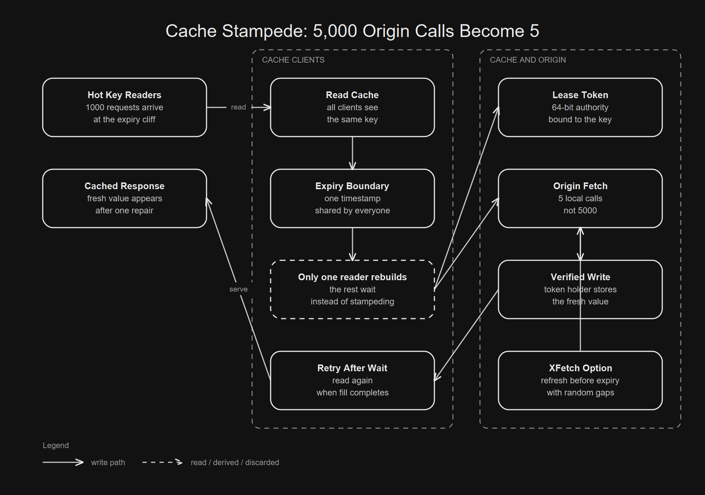

The cache miss path becomes synchronized origin work.
The rest wait briefly instead of joining the stampede.
XFetch pays with early refreshes. Leases pay with coordination.

01 / The naive solution
The Simple Cache Code Is Almost Embarrassingly Obvious
The schema more or less writes itself. Keep a value. Keep an expiry. When the value is missing, rebuild it and put it back.
Value get(String key) {
Value value = cache.get(key);
if (value == null || value.isExpired(now())) {
value = origin.load(key);
cache.put(key, value, ttl);
}
return value;
}This is not foolish code. It is the pattern most teams mean when they say cache aside. It only breaks when many callers make the same reasonable decision together.
read key
miss
query database
write cache
return valueThe single request trace looks perfect. One user pays the cost, the next user gets the cached value, and the database avoids repeated work. The trace stops being true when the miss path takes longer than the gap between readers.
03 / Production name
Facebook Names This A Thundering Herd
Facebook's memcache paper says its system processed over a billion requests per second and stored trillions of items. At that scale, a hot key is not just a local inefficiency.
one key
many readers
one expiry
many database tripsThe paper describes a thundering herd as what happens when heavy read and write activity repeatedly invalidates a key, so reads fall back to the more costly path.
Notice the write side in that sentence. This is not only about a key aging out peacefully. A busy object can be invalidated repeatedly by writes, and each invalidation sends readers back toward the database before the cache has a stable answer again.
04 / Conditional repair
A Lease Makes The Miss Conditional
Facebook's fix is to make a cache miss carry authority. Memcached gives one client a lease token for the key. The token is 64 bit, and the client must present it when writing the regenerated value.
reader A misses => receives lease token
reader B misses => told to wait
reader C misses => told to wait
reader A writes => token is verifiedThis changes the question from who noticed the miss to who is allowed to repair it.
without lease: every miss can rebuild
with lease: one miss can rebuildIt also protects against stale sets. If a delete invalidates the token before the client writes, memcached can reject that write. The cache no longer accepts the last writer blindly.
05 / Token rate
The Token Rate Is The Real Trick
For herds, Facebook adds a small rule: by default, memcached returns a token only once every 10 seconds per key. Other readers receive a special notification telling them to wait briefly.
lease window: 10 seconds per key
token owner: one client
other readers: wait and retryIn the paper's measurement for herd prone keys, peak database query rate fell from 17K/s without leases to 1.3K/s with leases. The number matters because databases are provisioned for peaks.
The waiter behavior is deliberately modest. The paper says waiting clients usually retry after the token holder has set the value within a few milliseconds. That is the bargain: add a small wait to avoid a large synchronized origin spike.
06 / Before the cliff
XFetch Fixes The Cliff Before It Arrives
Leases control the miss after it happens. XFetch asks a stranger question: what if the cache refreshes before the hard expiry?
value, delta, expiry = cache.read(key)
gap = delta * beta * random_exponential()
if now + gap >= expiry:
value = origin.load(key)The delta is the last recomputation time. The random gap is exponential. The default beta in the paper is 1.
Scaling by recomputation time is what makes the rule practical. A value that takes longer to rebuild starts asking for earlier refreshes. A cheap value can wait closer to expiry because its stampede window is smaller.
hard expiry:
|||||||||||||||||| origin
exponential early expiry:
| | | | origin07 / Load shaping
Randomness Is Doing Load Shaping
Uniform random early expiry sounds tempting. The paper argues for exponential gaps because they reduce stampedes while keeping early work close to the real expiry.
In the paper's experiment with 10 second regeneration, exponential gaps produced stampedes mostly of size 1 or 2, with none larger than 8. Uniform gaps were closer to 10 on average and sometimes 20 or more.
This is the useful part of the randomness. It is not random because the system is giving up. It is random because identical clients with identical clocks need a reason to stop behaving identically.
08 / Executable evidence
The Local Run Makes The Claim Executable
The Spring Boot repo simulates one hot key, 1,000 readers, 5 expiry cycles, a 1,000 ms TTL, and a 100 ms recomputation time.
strategy,origin_fetches,max_origin_fetches_per_expiry
naive,5000,1000
lease,5,1
xfetch,25,6These are local measurements from the repo, not Facebook production numbers. They are useful because they make the shape testable.
naive = readers * expiry cycles
lease = one repair per expiry cycle
xfetch = a few early repairs before the cliff09 / Small mechanism
The Lease Version Is Brutally Small
The mechanism can be sketched without a distributed cache. One caller gets the right to rebuild. Everyone else waits.
if (cache.expired(key) && lease.tryAcquire(key)) {
Value value = origin.load(key);
cache.write(key, value, lease.token());
} else {
waitBriefly();
}The hard part is not the pseudocode. The hard part is deciding what waiters receive, how long tokens live, and what happens when the token holder dies.
Some products can serve stale data while the repair runs. Some must block. Some can return a partial response. The lease only decides who rebuilds. The product still decides what everyone else experiences while the rebuild is happening.
10 / Cost
The Tradeoff Is Control Complexity
Leases add server cooperation. XFetch adds early work. Both are real costs.
more coordination => fewer duplicate origin calls
more early refresh => fewer synchronized missesThe wrong trade is pretending expiry is free. A cache is a shared coordination system once enough clients depend on it.
XFetch pays in earlier work. Leases pay in coordination. Naive cache aside pays at the worst moment, because the bill arrives exactly when the key is hot and empty.
11 / Build one
Build The Dumb Version Yourself
Start with the smallest benchmark that can embarrass the naive version.
[ ] create one hot key
[ ] expire it once
[ ] release 1000 readers together
[ ] count origin calls
[ ] repeat for lease and XFetch
[ ] write the CSVThen write the result as CSV. Public claims become calmer when the command prints the numbers.
./gradlew bootRun
cat benchmark.csvThe repo is not trying to be memcached. That is the point. A small simulator makes the invariant visible: count origin calls, not cache hits, because duplicate origin work is what hurts.
12 / Adversarial proof
Then Break It
Do not stop when the happy path works. A stampede prevention mechanism is only interesting under pressure.
fire 1000 readers at one expired key
make the lease holder fail
slow recomputation from 100 ms to 200 ms
run several expiry cycles
verify one CSV row per strategyThe failure case is the design. If the lease holder dies, another lease window must eventually recover. If recomputation gets slower, XFetch must refresh earlier.
Also test the uncomfortable middle. A perfect one origin lease with no recovery can freeze a key. A perfectly aggressive early refresh can spend origin capacity before anyone needs the value.
13 / The part that generalizes
The System Lesson Is That A Shared Deadline Can Be A Hidden Broadcast
The system lesson is not use leases or use XFetch. The lesson is that a shared deadline can be a hidden broadcast.
wrong model:
expiry removes one cached value
better model:
expiry schedules many clients at onceOnce you see expiry as scheduling, the fixes become clearer. Either elect one repairer, or spread repair attempts before the deadline.
This generalizes beyond caches. Cron jobs, retry timers, deployment waves, and client reconnect loops all become dangerous when many machines share the same trigger. The fix is often the same: ownership, jitter, or a budgeted gate.
14 / Closing question
Stop Optimizing The Miss Path Alone
A cache miss is not only a lookup outcome. It is also permission to create expensive work.
naive question:
is the value missing?
better question:
who is allowed to rebuild it?The cliff is not made of bad requests. It is made of good requests arriving with the same information.
Expiry is not deletion. It is a meeting invite.